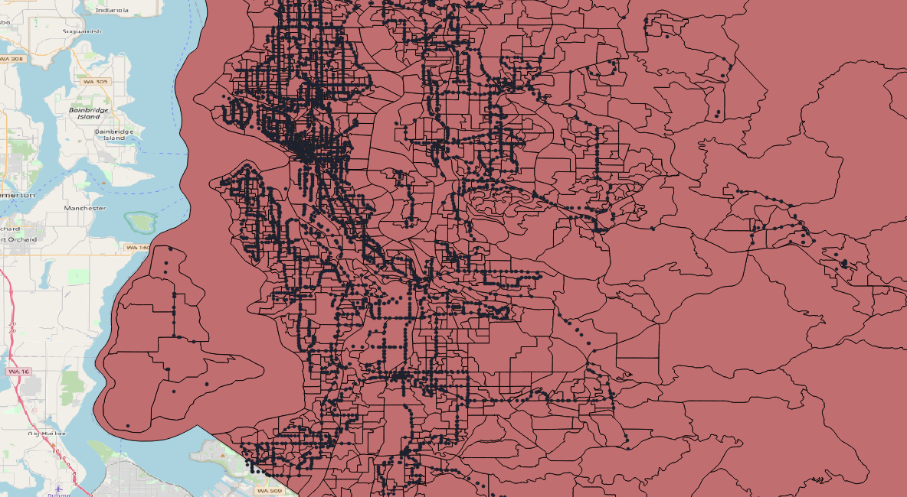
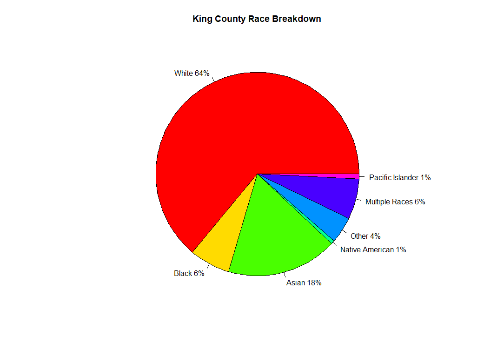
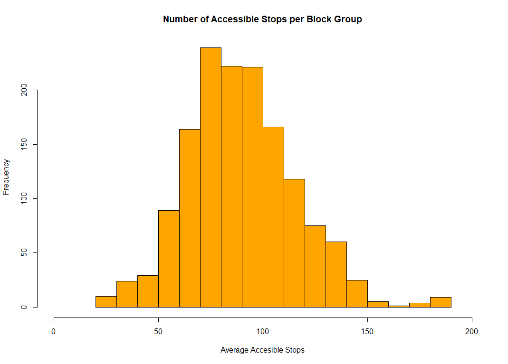
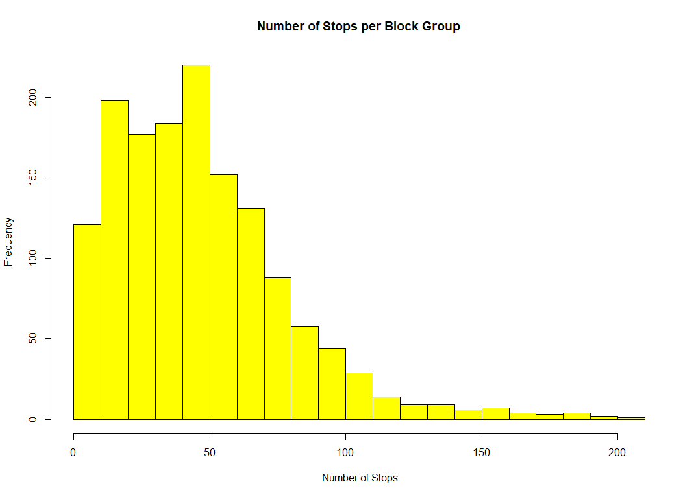

In this project we explore the current level of transit accessibility at the block group level in Seattle. Our main question is which areas currently have the most, and least access to transit in King county. We follow this up with an analysis of who is most affected in areas with low transit coverage, and potentially allow the viewer to interactively place transit stops or change service parameters to view the effects on accessibility. To accomplish this we first quantify accessibility based on the KCM GTFS transit stop locations and schedules, and create a choropleth map as our main visualization.
 Transit stops and block groups throughout King County.
To answer this, we utilize several datasets related to transit availability and the socioeconomics of the Seattle region. The fundamental transit schedule and stop location data is drawn from the King County Metro (KCM) General Transit Feed Specification (GTFS). This resource provides a static list of all available stops, routes, and schedules in the KCM network. To create the choropleth maps, block group shapefiles are taken from the American Community Survey (ACS) TIGER shapefiles. These designate areas at which socioeconomic census data is available for. The ACS also provides socioeconomic data in the form of marginal counts for each block group, as well as a set of limited microdata called the public use microdata samples (PUMS).
Transit access and performance can depend on different variables, and can mean different things to different people. Most transit agencies seek to maximize their on-time performance, which makes the system reliable for users, even if buses are infrequent. Most users would like to access a wide array of places without having to transfer routes, which can increase the trip time and add hassle to a commute. The distance to the closest stop can also be a factor, as a long walk time simply to access a transit route can decrease the utility someone gets out of a service. Overall, we have created four metrics by which to measure transit accessibility within each block group of King County:
The accessibility metrics chosen for this analysis were determined using QGIS, and data on existing stops and route schedules provided in the King Country Metro GTFS data. One concern is that some of the metrics selected could be correlated with one another. For example locations with more stops might also have a higher number of routes per stop, since it would be easy for a route to stop at multiple stops which are close together in a single block group. To ensure that there is no multi-collinearity in the analysis of accessibility metrics, we create a pairwise scatterplot across each of the accessibility metrics, to ensure the metrics which are not correlated with one another.
The results of this show that there is perhaps a small relationship between the number of stops in a block group, and its average number of routes per stop. As mentioned previously this may be due to the fact that if a route is going to be sent through a block group, and there are lots of other stops already present in that block group, it makes sense to send the route through those stops as well. However, it is still worth keeping each of these metrics in the analysis as they provide separate information which can be used to analyze the overall accessibility of a given block group.
In the visualization below, each metric is shown separately for all block groups in King County. Try switching between metrics to see how the story changes depending on the criteria that is used to rank transit accessibility:
As you may have noticed, different metrics indicate concentrations of transit accessibility in different locations. For example, the Number of Stops and Average Number of Routes metrics are extremely high in downtown Seattle. There is in part because there is lots of demand here; due both to high concentrations of housing and jobs. It is also a location that is quite central to the region, so it is easy for most routes to have a stop here, which increases the overall number of routes that can be accessed per stop.
On the other hand, if one looks at the Average Number of Accessible Stops, a different story is told. Here we can see that the neighborhoods of Burien, Renton/Kent, Auburn, and Bothell among others are able to access many more stops than the rest of the county. Likewise the Average Frequency metric is quite well-distributed spatially across the county, as most routes follow a similar scheduling pattern that repeats at 15, 30, or 45-minute headways throughout the day.
These prior mapping visualizations give us some idea of how transit access is distributed spatially, but we would also like to see how it relates to other socioeconomic variables such as income, racial breakdown, and quantity of transit users in a block group.
First, we look at how these variables are distributed across the full region:
 We can see that the majority of King County is made up of white residents at about 2/3 of the population. The Asian population in King County has the second most residents with just 18%, and no other race comprises of more than 6% of the King County population.
 The number of accessible stops per block group in King County is approximately normally distributed, with the majority of block groups having somewhere between 70 and 100 accessible stops. There are some outliers with close to 200 accessible stops, which are likely block groups located near downtown Seattle.
 The distribution of the total number of stops per block group has a clear right skew, with most block groups having less than 50 stops.
The visualization below allows you to explore the relationship between income and transit accessibility. Click and drag on the income histogram to explore how different subsets of the socioeconomic spectrum vary in levels of transit accessibility. The metric can be changed by selecting a new one in the map:
Although this visualization captures how income and access vary throughout the region, it is less effective at getting to the root of the question; how do income and accessibility correlate? This relationship can be more clearly seen in the scatterplot visualizations below:
There does not appear to be any correlation between household income and either of the transportation accessibility metrics. This is indicative of King County having fairly equal access to transportation in each block group regardless of their economic status. This is consistent with the effort that King County puts into improving their transportation systems as well as the many rankings that list Seattle as number 1 for public transport.
In King County, the transportation accessibility metrics doesn’t have obvious correlation with median income or race. Thus we come to a conclution that King County has a fairly equal access to transportation in each block group regardless of economic status and race. This is consistent with the effor that King County puts into improving their transportation systems as well as the many rankings that list Seattle as number 1 for public transport.